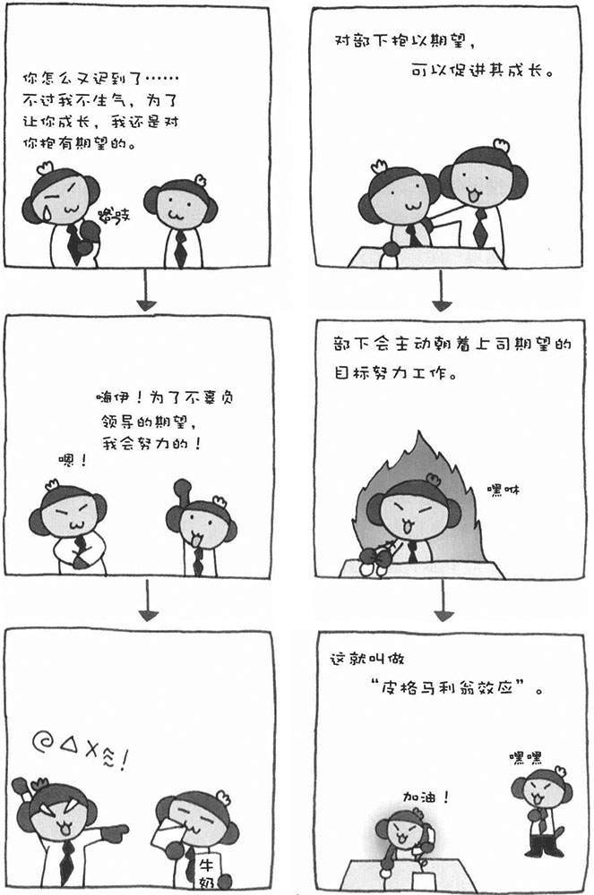
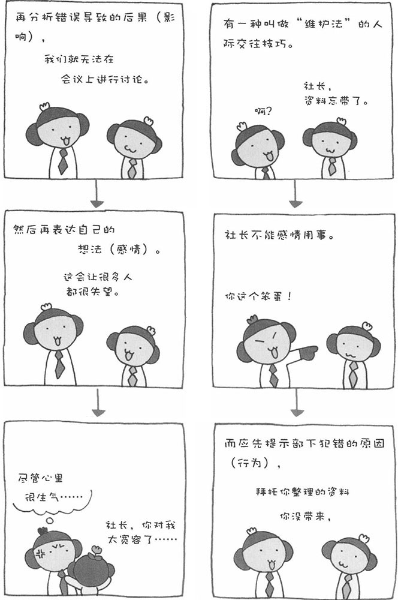
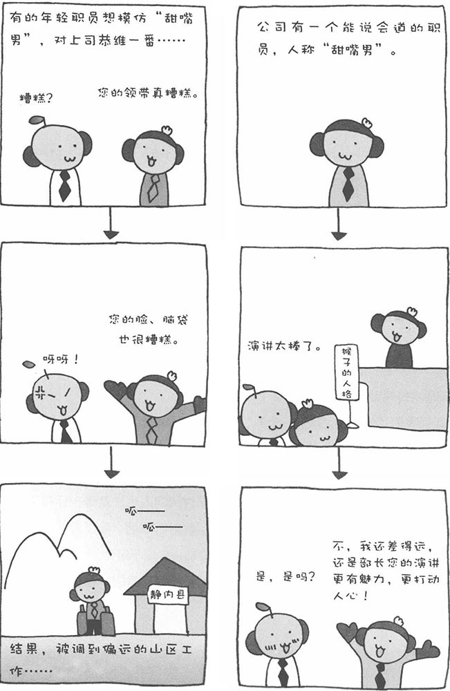
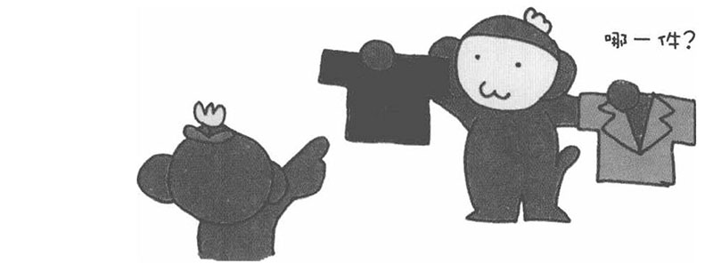
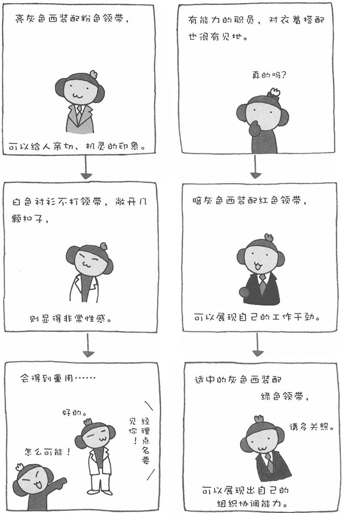
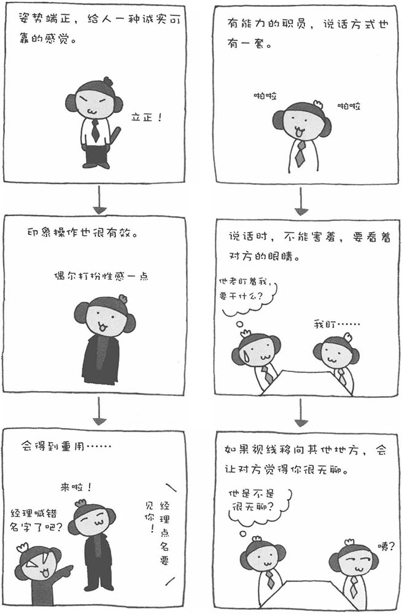

办公室实用心理学
～激励部下、后辈的方法～
是时代变了吗？还是我们自己成熟了呢？怎么总感觉公司的新进职员对工作没什么热情呢？他们似乎缺乏上进心；他们总是优先考虑自己的私事而非工作；一旦工作不顺心或遭到上司批评，马上就辞职不干了；他们从不勉强自己工作，很少能见到他们加班的身影……我认为这些都是由年轻人的成长环境造成的。他们大多在优越的环境中长大，从小很少遇到挫折，也很少受到严厉的批评。
要想激励这样的部下或后辈努力工作，还真不是一件容易的事。以往的"批评法"和"提醒法"，会因对方自身的性格特点而产生不同的效果。有的年轻人，批评太重了，就一蹶不振，说得太轻了，又当作耳旁风。其实，对一般人来说，表扬的方法更容易激发他们的工作热情。如果对对方抱以期望并将自己的期望告知对方，对方会主动朝着期望的目标奋起努力。这种方法比强迫对方努力工作的效果要好得多。这被称为"皮格马利翁效应"。
皮格马利翁是希腊神话中的塞浦路斯国王，他深深地爱上了自己雕刻的少女雕像。神被皮格马利翁对雕像的深情所感动，于是赋予雕像生命。在心理学中，用皮格马利翁的名字命名了期望成真的心理效应。这种心理效应对于激发部下和后辈工作的热情是非常有效的。因此，当您想批评部下、后辈时，不妨先忍一忍，换一种表扬、期待的口吻，也许更能促进其成长。
使用皮格马利翁效应的要点在于，不能只是口头的表扬和期望，而要发自内心地信任部下和后辈，真正地对他们抱以期望，只有这样才能激励他们努力工作。人有一种心理防卫机制，会担心部下、后辈辜负自己的期望，于是很多情况下上司从一开始就不信任部下。这样一来，怎么可能很好地激发起部下和后辈的工作热情呢？因此，说现在的年轻人不努力工作，年轻人自身存在问题是一个方面的原因，而另外一方面的原因则来自上司的心理防卫。

办公室实用心理学
～使办公室气氛和谐的"维护（Assertion）法"～
根据皮格马利翁效应，上司应该多多表扬部下，并对部下抱以期望。然而，一味忍让、无原则地表扬，也绝非上司管理部下的良策。
接下来，我为大家介绍一种目前广泛应用于服务业和医疗事业的管理方法——"维护法"。这是一种"既尊重自己也尊重对方"的人际交往方式，与此同时它还是一种思维方式。换句话说，就是上司要理解并尊重对方（部下），并将自己（上司）想说的话充分表达出来，既不是一味地批评，也不是一味地表扬。在心理学上，这是一种非常优秀的人际交往技巧。目前，很多企业的管理者都在积极学习这一方法。
比如，部下在一个月之内，因为马虎犯了四次错。遇到这种情况，很多上司都难以抑制心中的怒火，会狠狠地批评部下一顿："你是怎么搞的？这个月已经是第四次犯错了，以后给我小心一点！"然而，根据"维护法"上司不要一上来就批评部下，而应该先提示部下犯错的原因（行为），然后再给他分析犯错的后果（影响），最后再将自己心中的想法（感情）传达给部下。于是，上司此时应该这样说："你在提交之前没有认真检查（行为），才造成这样的结果（影响），我感到非常遗憾（感情）。"
也就是说，对于部下犯的错误，上司不应撕破脸皮大骂，，而是要帮他分析原因和结果，并希望他以后能改正。这样一来，部下也明白了自己犯错的原因，知道以后该如何做，并把这次错误当作经验教训，在以后的工作中加以改进。
再比如，如果部下迟到了，上司不能再像以前那样，劈头盖脸骂一顿："以后不许再迟到！否则的话……"此时，应该告诉部下迟到造成的影响和自己的想法。采用这种方式交流，由于是相互表达意见，也许有相互不赞同的地方，但不会发展到相互攻击的地步。也就是说，相互都让一步，才能得到最合适的结论。

办公室实用心理学
～赞美上司的高明方法～
对公司的普通职员来说，与上司处好关系是非常重要的。上司对职员的评价主观因素居多。为了给上司留下好印象，职员有时会做一些平时不会去做的事情。心理学将这种现象称为"自我展现"或"印象操作"。因为与自己的切身利益息息相关，职员有时会对上司说违心的话、做违心的事，这就是所谓的奉承。比如，逢年过节时，特意绐上司送些礼物，就是奉承的一种形式。不过，如果这种行为的频率太高，就没效果了。如果让上司看出你并非出自真心，还会适得其反。
电影和电视剧中的人物，一般一眼就能分清他们是好人还是坏人，但是在现实生活中，可没有那么容易让人看清的人。人性是复杂的，我们的领导、上司也是如此。因此，即使要奉承上司，也要有高明的方法。那么，什么才算高明的奉承方法呢？基本上，赞同上司的意见能让其非常开心。此外，如果能适时、适当地赞美他几句，效果就更好了。
1.进行具体的赞美
举例来说，"您这双皮鞋真有型"、"您的皮鞋和裤子搭配起来真有型，而且颜色也能突显出您的气质"，以上两句话都是赞美上司的话，您、觉得哪一句更好呢？当然是第二句，因为它从具体细节进行赞美，而且听起来奉承的意思也不那么露骨。因此从具体细节着眼进行赞美是非常有效的方法。
2.赞美其意外的长处
这种方法强调的是意外性。当我们赞美上司时，不要选择那些人尽皆知的长处，而要善于发现上司身上不太引人注意的优点。有时，上司也会有意展示一下自己的"特殊才能"。如果得不到别人的赞美，那是多么尴尬的事情啊。因此，作为下属，我们一定要善于把握这样的时机。适当的赞美能让上司对你另眼相看。
3.赞美的话要大声说出来
在赞美上司时，一定不能羞羞答答、遮遮掩掩，要清楚、大声地说出来，最好带点感动、激动的情绪。

办公室实用心理学
～与"生理性"讨厌的人相处的方法～
在公司中，如果没有众多同事的支持，我们很难把工作做好。然而，公司的同事中不可能全都很好相处，总有自己不喜欢的人，比如"喜欢背后说别人坏话的人'"总把责任推卸给别人的人'"部长的情人"等。对于这些人，我们讨厌他们都有明确的原因。还有一些人，我们自己也说不清楚到底讨厌他们哪一点，但就是"从生理上"无法接受他们。
所谓的"生理性讨厌"，到底是讨厌对方什么呢？也许是因为讨厌到了极点，都懒得去想到底讨厌对方什么。于是，为了图方便，就用"生理性讨厌"大体概括了。或者也许是反感对方的外貌，但又不好直接说，只能用"生理性讨厌"婉转地表达。
对于前一种"生理性讨厌"，即懒得去想讨厌对方的理由，从心理学来看，很多情况下，我们讨厌对方其实是因为自己身上也有同样的毛病。也就是说，我们讨厌自身的某些毛病，而对方恰巧也有同样的毛病，于是我们便会讨厌他。看到那个人，就会让我们想到自身的毛病，这种感觉您能理解吗？于是，我们索性放弃去想讨厌对方的理由，干脆用"生理性讨厌"来暧昧地概括。这其实也是自我防卫的一种——不追究讨厌对方的理由，也就不用去想自己身上的毛病。现实生活中，性格相似的父子或母女经常吵架，就是因为这个原因。
如果我们"生理性讨厌"一个人，对他的讨厌程度就会以加速度上升。想一想，如果不得不和这样的人一起工作，那将是多么痛苦的一件事啊。遇到这样的情况，我劝您冷静下来，仔细想想自己讨厌对方哪些地方。其实，对方身上的毛病，也许正是您自己身上的毛病。换个角度来想，我们讨厌的人也许就像一面镜子，可以帮助我们发现自己性格中的问题并加以改进。了解对方之后，除了讨厌的地方，也许还能发现你们身上有其他共同之处，拉近彼此的距离，说不定你们还能成为好朋友呢。不管怎样，我们首先必须进行自我暗示，敞开心扉寻找自身的问题，发现对方的优点，这样才能与他们建立真正良好的人际关系。

办公室实用心理学
～演讲的技巧①～
近些年来，不只广告公司和策划公司，很多公司的职员都要在公司内对客户进行演讲、演示。现在的演讲多用Power Point等软件进行辅助演示。要进行一场有说服力的演讲，内容好不一定能成功，重要的是给听众留下印象、吸引听众认真倾听。接下来，我将从心理学的角度出发，为您讲解演讲的一些技巧。
准备篇
进行演讲之前，我们都会紧张，甚至会产生恐惧感。如果演讲失败，该如何是好？心里一直忐忑不安。其实，事前准备得越充分，我们的紧张感就越少。现实工作中，一般给我准备的时间都很少，因此更要合理利用有限的时间。首先，准备演讲材料的时间必须充分。如果有多余的时间，再进行演讲练习。实际上，演讲并没有那么可怕，实际经历几次之后，也许您还会喜欢上在人前演讲的感觉呢。
1.演讲时间的分配与构成
演讲前，必须考虑演讲内容的时间分配。整理的演讲材料，要在规定时间的80%左右陈述完毕。演讲材料一般分为导入部分、正题和总结等几个主要部分。此外，还要考虑把高潮部分放在什么地方，以及如何将演讲推向高潮等问题。我认为演讲的导入部分应该放一些吸引人的内容。根据"开头效应"，如果导入部分能给听众留下好印象，整个演讲都会给听众留下好印象。演讲材料整理好之后，至少要进行三遍以上的排练，并且要在规定的时间内排练完。这样一来，我们不仅可以修正演讲时间上的分配，还可以牢记演讲内容，从而增强自信，减少不必要的紧张感。
2.1页材料需要的解说时间
使用Power Point软件一边演示一边讲解时，有人说1页的材料用3分钟讲解完比较合适。对于如今的年轻人，用3分钟去讲解1页资料，稍微显得长了一些。不过，如果时间过短，又不容易给人留下印象。因此，折中一下，用2～3分钟时间解说1页资料应该比较合适。
3.演示资料的字体
连演示资料的字体都有讲究吗？是不是研究得太细了啊？其实，演示资料的字体，对观众的影响绝不可小视。在演示资料中，常用的汉字字体大体有两种，一种是黑体，一种是宋体。黑体字比较鲜明，给人的视觉冲击相对较大，容易被记住。宋体字则看起来比较舒服，适合较长的说明文字。演示资料中使用的文字一般都很少，因此用黑体比较合适。
4.演讲者的穿着
在进行演讲、讲解时，不论男女，都适合穿深色的套装。首先，演讲者衣着整洁，会增强演讲的说服力，这是一种"光环效应"。此外，特别提醒男士要注意领带的颜色。红色等原色的领带，是热情的象征，演讲时有助于俘获听众的心。然而，进行解说时，红色过于吸引听众的视线，会让听众无法集中精神观看屏幕。因此，在解说时不宜带红色领带，还是选择其他较深的颜色为好。

办公室实用心理学
～演讲的技巧②～
实践篇
1.声音的大小与语速的快慢
演讲时，有意识地提高音量是非常重要的。大声演讲有一种打动人心的力量，而且会让听众感觉可信度高。此外，演讲的语速也很重要。一个人平时说话的语速快，往往表明其性格中有争强好胜的一面，或者说他的竞争心比较强。然而，在演讲中，语速快并没有任何好处。演讲者应该用稍微缓慢的语速演讲，缓慢地、充满自信地大声演讲更容易打动听众的心。
2.重要的部分要反复强调
这是欧美国家的政治家在演讲时经常使用的手法。重要的部分就要反复强调，听众反复听到后自然而然就会在脑海中留下印象。这也是根据记忆的原理帮助对方记忆的方法。听众在反复听的过程中，会使短期记忆转变为长期记忆。
3.对听众要一视同仁
演讲时，我们的眼睛应该注视哪里呢？当然是听众的脸（眼睛）。此时，对所有听众一视同仁是非常重要的，这也是演讲的一个基本技巧。当我们知道听众中有一位有决定权时，就会不经意地在大部分时间里把目光都集中在那个人的脸上。这种做法非常不可取，不仅会使自己的意图过于露骨，还会引起其他听众的不快。此外，对所有听众一视同仁、不把目光集中在一个人身上，还可以发现听众对自己演讲的反应。比如，看到台下有人点头，我们就可以用目光与其进行交流。这种眼神的互动，可以使演讲的气氛变得活跃起来。
4.善用停顿
善于演讲的人与不善于演讲的人，最大的差别就在于对"停顿"的应用。演讲就是说话，但对于听众来说，与说话相比，这不说话的"停顿"更能引起他们的注意。不知您是否遇到过这样的情况：当老师在前面讲课时，下面难免有同学思想溜号，低头想自己的事情，可是如果老师突然不说话，低头的同学会马上抬起头来，确认发生了什么事情。这就是停顿的作用。在演讲中，当我们要强调一句话的时候，最好在之前稍微停顿一下，把听众的注意力都吸引过来，然后再缓慢地、大声地说出来。这个方法的效果非常显着，不信您可以试一试。
5."双面呈现"的效果
只阐述事物的优点或缺点，叫做"片面呈现"。既阐述事物的优点，又说明其缺点，就叫做"双面呈现"。当我们演讲的对象是知识分子时，最好采用"双面呈现"的方法，才能更有效地说服听众。比如，采用"优点——缺点——优点"的阐述方法，效果更好。
比如，有一家服装公司，营业科长想请设计师就未来的服装设计方法做一个演讲。在公司众多优秀的设计师当中，科长选择了一名刚进入公司不久的新人设计师。这是为什么呢？科长的回答令人深思。他说："与优秀的设计方案相比，我们更想听到的是新人的'热情'!"由此可见，"热情"的演讲，也许比内容优秀的演讲更易打动人。即使使用再多的心理学技巧，但如果没有真心投入的话，那演讲最多也就是语言的罗列，只能让听众感到枯燥乏昧。因此，说到底，演讲时必须要用"心"和投入"热情"!
办公室实用心理学
～成为看起来有才能的职员①～
前面我们已经学习了各种各样的心理效应和心理学技巧，但即使我们把所有心理学的技巧都用上，也不可能马上从新手变成有才能的职员。不过，要成为"看起来有才能的职员'还是有办法的。
虽说是"看起来有才能"，但"看起来像蟹肉的鱼肉泥"与真正的"蟹肉"在味道上也没什么差别。如果能成为"看起来有才能的职员"这种"形似"也能发挥它的作用，也许能帮助我们成长为真正有才能的职员。虽然"看起来像蟹肉的鱼肉泥"永远也不可能成为"真正的蟹肉'但"看起来有才能的职员"只要通过努力，就可以成为"真正有才能的职员"。
■ 决定人外表形象的服装颜色
"光环效应"是一种强大的心理效应。如果自己外表漂亮，对方就容易对我们的背景做好的推测，对我们做出良好的评价。人的长相改造是有一定限度的，我们不可能依靠整容改变别人对我们的评价。那么，衣着、发型和化妆等就显得尤为重要了。
尤其是刚进入新公司、与新同事共事时，都想给大家留下良好的第一印象。根据"开头效应"，如果第一印象不好，将影响到别人对自己的整体评价。这时，服装的颜色就是一个非常重要的因素，尤其是男性的衣服与领带的搭配应该慎之又慎。西服套装与领带的不同搭配会传递出不同的信息。
例如，如果想给别人留下诚实可靠的印象，可以选择藏青色西装、白色衬衫和黑色小饰物等，相应地推荐选择同色系、大花纹的领带。藏青色的西装配以橙色的领带会给人一种明快、充满活力的感觉。黑色的西装配上黑色的领带，会给人一种压抑感。因此，黑色的西装不适合搭配黑色领带。如果想展现自己的热情和干劲，可以穿黑西装配红色领带。而对于女性来说，服装颜色的搭配不必像男士那样拘谨，可以活泼一些，但如果想营造一种清爽的感觉，一身白色衣服未免显得冷冰冰的，因此最好再搭配一些暖色调的配饰。

办公室实用心理学
～成为看起来有才能的职员②～
■ 表情、说话方式
与初次见面的人交谈，与谈话内容相比，我们更注重对方的说话方式和表情等等。在说话方式上，我们应该稍微放慢语速，语调也要温和一点。至于表情，眼神非常重要。睁大眼睛微笑着注视着对方的眼睛说话，更容易打动人心。此外，当我们一边思考一边说话时，眼睛总是不自觉地往上看。这一点要特别注意，对别人说话时眼睛不能看着天花板。
■ 动作、姿势
谈话时，最好能加上一些手势，因为手势是人的第二表情。姿势也经常被人们忽略。近来，也许是伏案工作太多的缘故，很多人都有点驼背。与人谈话时，坐在椅子上驼背的样子真的很难看。因此，有这个问题的朋友应该有意识地注意一下。
■ 有效的自我展示
有意识地、主动展示自己，就叫做自我展示。自我展示又分为"战术性自我展示"与"战略性自我展示"。所谓"战术性自我展示"，包括"自我宣传"、"奉承"、"威吓"等，即在短时间内给对方留下的印象。"战略性自我展示"，则包括建立"威信"、"信任"以及获得"尊敬"等，即在较长时间内给对方留下的印象。
对个人成长而言，"战略性自我展示"能起到很好的作用。我们首先会给自己确定一个目标，比如"我要成为那样的人"或者"看起来是那样的人"，这样的目标可以促使我们努力。虽说是为了"展示"，但长期坚持的话，我们就会变成目标中的人。
■ 敞开心扉很重要
要成为"看起来有才能的职员"首先就要获得大家的好感。注意，我们不只是"模仿"有能力的职员，因此不可故弄玄虚。要提升大家对自己的好感，敞开心扉、将自己的心理话说给大家听是非常有效的。有些人认为吹牛、说大话可以博得别人的崇拜，但那只是暂时的，总有被戳穿的一天。因此，一定要说真心话，才能让别人感到亲切。
